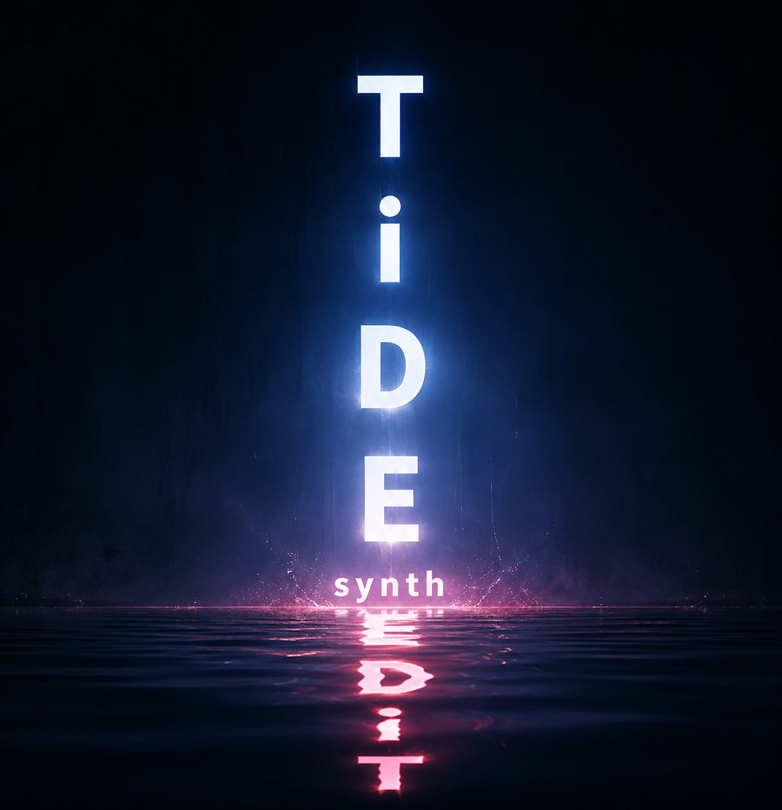

TIDE Rack
A modular synth that lives inside your DAW.
TIDE Rack is a patching environment that runs as a plugin. You build the instrument in the same window you play it in — there is no separate application, nothing to export, and no build step between an idea and a sound. Your DAW supplies the audio and the MIDI; you supply the patch.
It ships with a fixed set of built-in modules — oscillators, filters, envelopes, and the plumbing between them. Everything arrives with the plugin; there is nothing to install alongside it and nothing to download into it.
TIDE Rack is the first plugin from TIDE Synth — hence the address. If there are others, they will appear here.
Status: in development. There is nothing to download yet. The first release will do one thing — load in a DAW, let you wire an oscillator and an envelope to an output, play it from your keyboard, and still be there when you reopen the project.
Price
TIDE Rack is free. There is no paid version, no trial period, and no licence key.
It runs on donations. If it turns out to be useful, there is a link below; the plugin itself will not bring it up.
Planned formats
- Windows VST3
- macOS AU, AUv3, VST3
- iOS AUv3
- Linux VST3, CLAP
Source
TIDE Rack is open source, under the ISC licence. The code, plan and working notes are in the TIDE Synth repository at github.com/JeffMcClintock/TideSynth.